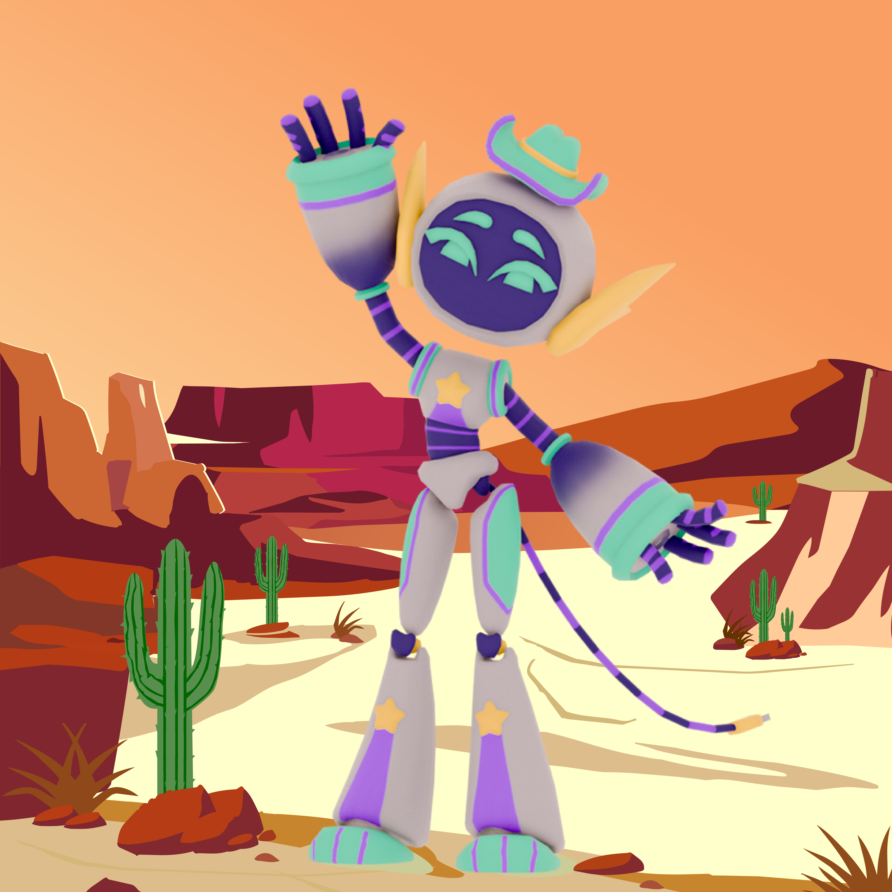
Die Grenzfigur der Zukunft
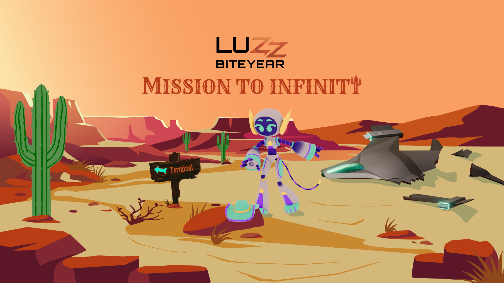
Story
Eigentlich hatte der Roboter Luzz Biteyear einen klaren Auftrag: einen fremden Planeten erkunden und neues Gebiet für die Menschheit finden. Die Landung lief nur nicht ganz nach Plan. Jetzt steht der tollpatschige Roboter mitten in einem Canyon, der aussieht wie ein Western-Set – nur eben im Weltall. Wer hätte gedacht, dass Erkunden auch mal richtig krachen kann?

Die Grenzfigur der Zukunft
Nach dem Absturz ist Luzz auf sich allein gestellt: neugierig, etwas tollpatschig, aber entschlossen.
Denn Luzz ist ein außergewöhnlicher Roboter: Er kommt aus dem All und hat Hände wie jeder andere – sein wahres Werkzeug ist aber der Kabelschwanz mit Universalstecker. Steckt er ihn in ein Terminal, schaltet sich sofort Albyte dazu, der humorvolle Narrator und seine bessere Hälfte. Der zeigt ein Rätsel – und erst wenn das geknackt ist, öffnet sich der Weg weiter.
Zusammen sind die beiden ein schlagkräftiges, witziges Team, selbst wenn im Wilden Westen das Chaos regiert. Langeweile? Fehlanzeige.
USK 12
Staubige Wege, weite Landschaften und der Charme des Wilden Westens treffen auf eine Welt voller Technik und Überraschungen. Begleite Luzz auf seinem Abenteuer und entdecke eine außergewöhnliche Western-Welt, in der Vergangenheit und Zukunft aufeinandertreffen. Erkunde neue Orte, stelle dich spannenden Herausforderungen und finde heraus, was hinter der nächsten Ecke wartet. Dabei verbindet das Spiel die vertraute Atmosphäre des Wild West mit modernen Ideen und einem ganz eigenen Charakter.
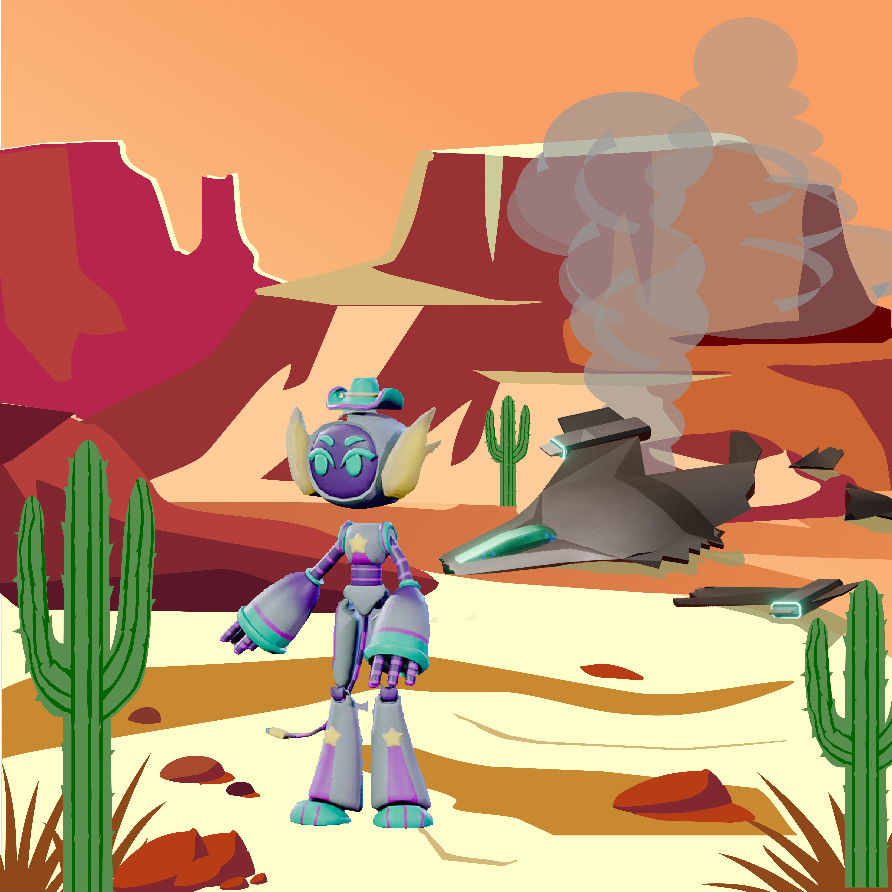
Die Landung
Galerie
Luzz Biteyear stürzt unfreiwillig auf einem fremden Wüstenplaneten ab – irgendwo zwischen Canyon und Sternenstaub. Mit seinem Steckerschweif erkundet er die Umgebung, dockt an alte Technik an und lernt so Schritt für Schritt neue Fähigkeiten, die er braucht, um weiter vorzudringen.
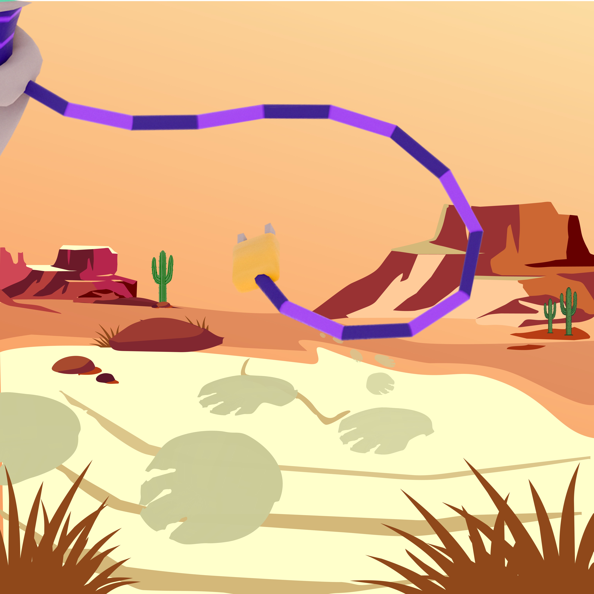
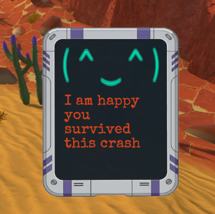
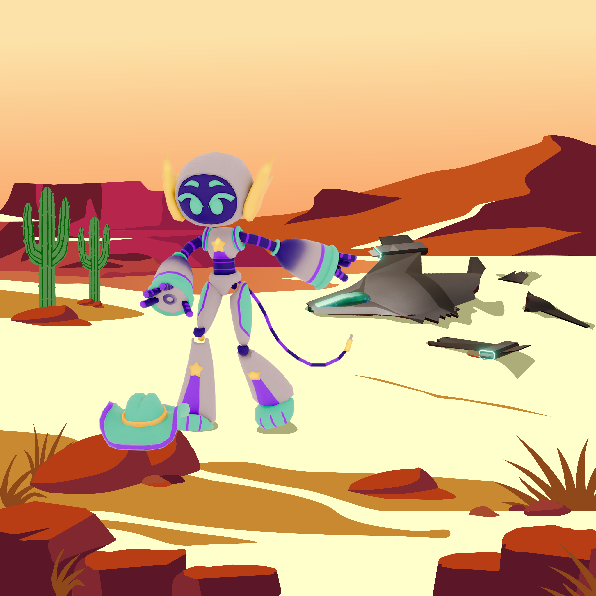
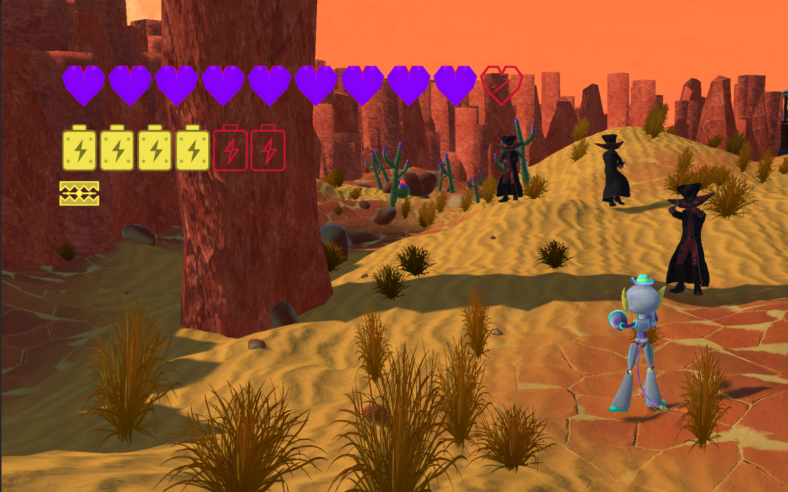
Features
Staubige Canyons, alte Technik, ein Roboter mit ziemlich viel Neugier – und noch mehr Tollpatschigkeit, die zum Schmunzeln einlädt. Meistens hat er einen Plan. Manchmal auch nicht. Wenn's brenzlig wird, hat Luzz zwei Optionen: mit seinem eingebauten Laser aus der Distanz feuern – oder ganz direkt zubeißen. Kein Wunder bei dem Namen. Beides kostet Kraft, also gut überlegen, wann sich der Biss lohnt.
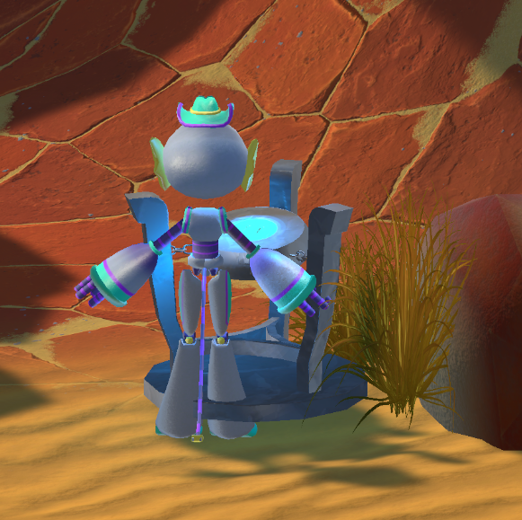
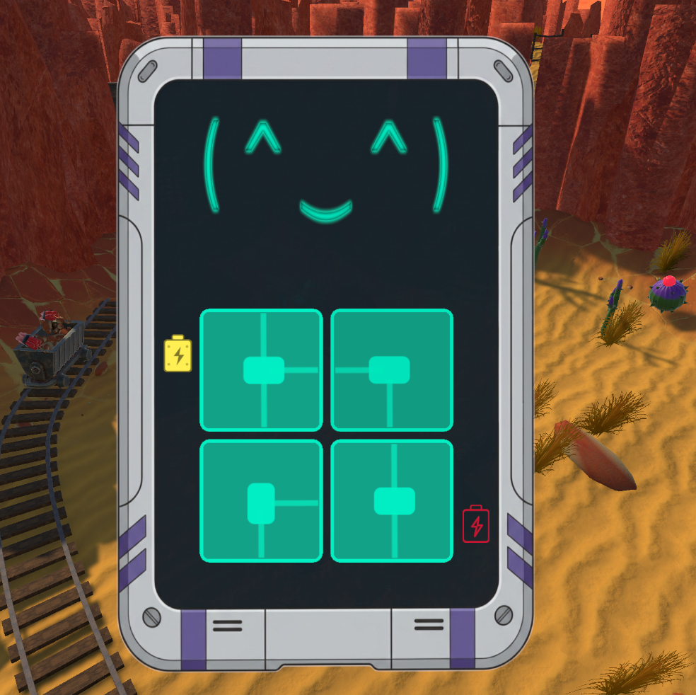
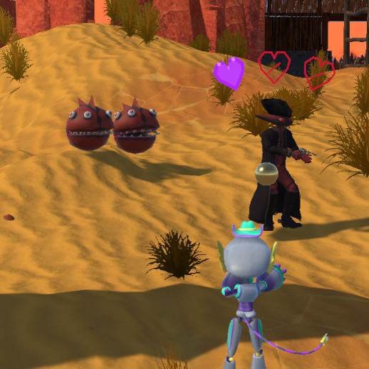
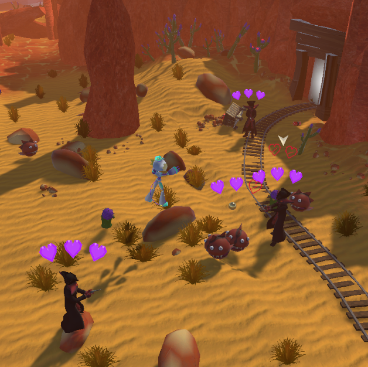
Erkunden, kämpfen, Rätsel knacken – im Canyon wartet einiges. Spielaufbau, Steuerung und die ganze Story gibt's im Detail auf itch.io.
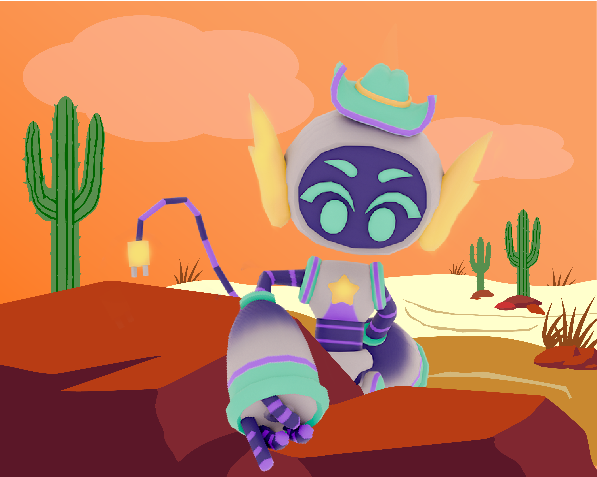
Mehr DetailsTrailer
Bewertungen
„Ich zocke das schon seit Tagen und finde es voll spannend, was ich bei den Rätseln so lerne. Jede Ecke im Canyon hat was Neues – und in der Schule reden gerade eh alle nur noch über Luzz.“
Finn · 13
„Endlich eine Spielewebsite, bei der ich auf einen Blick sehe, worum es geht: USK 12, klar erklärt, kein Werbe-Schnickschnack. Mein Sohn liebt Luzz, er erzählt mir am Wochenende stolz von seinen Abenteuern. Und ich weiß genau, was ihn erwartet.“
Nina M. · Mutter, 43
„Hat mich sofort an meine alten Zelda-Nachmittage erinnert – nur mit einem Roboter. Das Western-Setting ist besser, als ich es von früher aus anderen Spielen in Erinnerung habe. Echt empfehlenswert für jeden Nostalgieliebhaber. Kleines Studio, große Liebe zum Detail.“
Jonas R. · 36, kennt jedes Zelda seit 1998
„Ich finde das Spiel richtig klasse und habe es von meinem Patenkind empfohlen bekommen. Nun spielen und lachen wir zusammen, wenn er bei mir ist, und lösen die Rätsel gemeinsam. Wir hoffen, dass es bald eine Version gibt, die wir zu zweit spielen können.“
Hannah P. · 38, liebt Nostalgie und Sinn für Humor
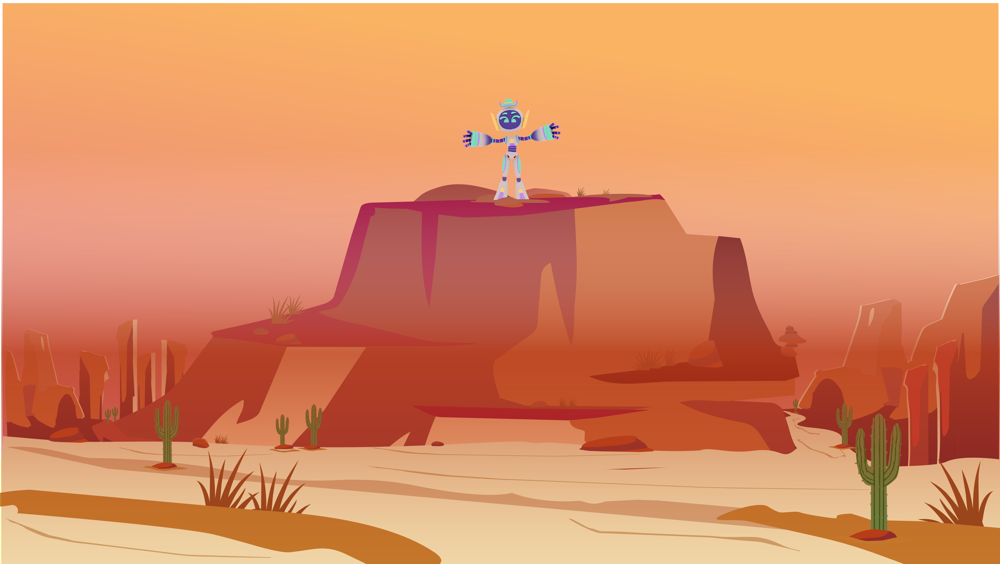